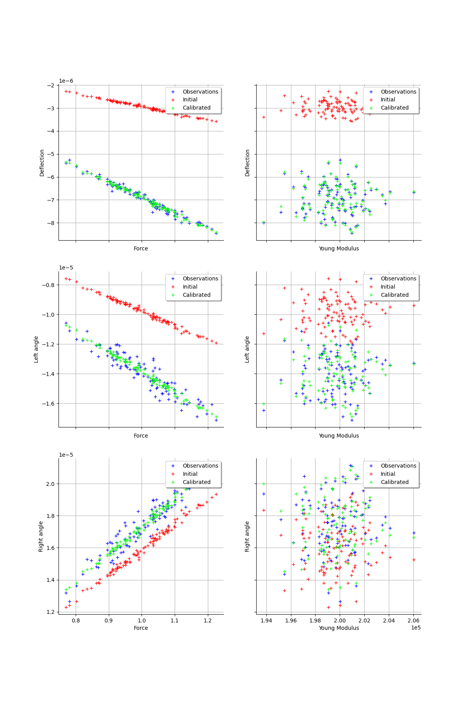
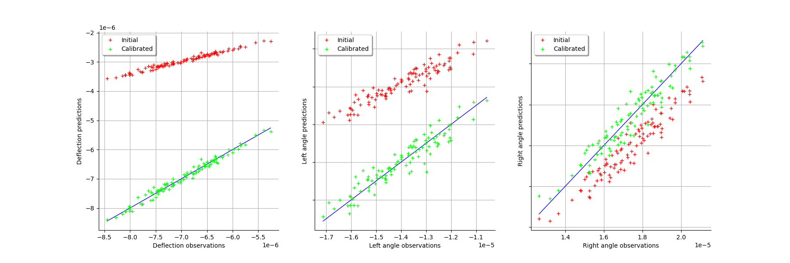
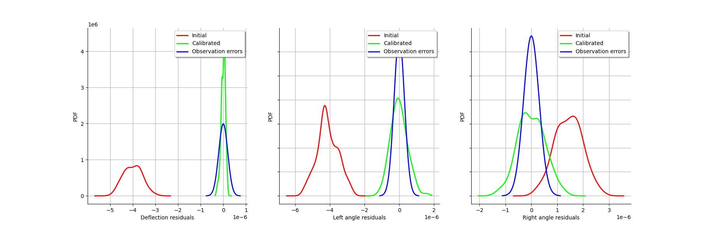

Calibration of the deflection of a tube¶
Description¶
We consider the deflection of a tube under a vertical stress.
The parameters of the model are:
F : the strength,
L : the length of the tube,
a : position of the force,
D : external diameter of the tube,
d : internal diameter of the tube,
E : Young modulus.
The following figure presents the internal and external diameter of the tube:
The area moment of inertia of the cross section about the neutral axis of a round tube (i.e. perpendicular to the section) with external and internal diameters  and
and  are:
are:

The vertical deflection at point  is:
is:

where  . The angle of the tube at the left end is:
. The angle of the tube at the left end is:

and the angle of the tube at the right end is:

The following table presents the distributions of the random variables. These variables are assumed to be independent.
Variable |
Distribution |
|---|---|
F |
Normal(1,0.1) |
L |
Normal(1.5,0.01) |
a |
Uniform(0.7,1.2) |
D |
Triangular(0.75,0.8,0.85) |
d |
Triangular(0.09,0.1,0.11) |
E |
Normal(200000,2000) |
References¶
Deflection of beams by Russ Elliott. http://www.clag.org.uk/beam.html
https://upload.wikimedia.org/wikipedia/commons/f/ff/Simple_beam_with_offset_load.svg
Shigley’s Mechanical Engineering Design (9th Edition), Richard G. Budynas, J. Keith Nisbettn, McGraw Hill (2011)
Mechanics of Materials (7th Edition), James M. Gere, Barry J. Goodno, Cengage Learning (2009)
Statics and Mechanics of Materials (5th Edition), Ferdinand Beer, E. Russell Johnston, Jr., John DeWolf, David Mazurek. Mc Graw Hill (2011) Chapter 15: deflection of beams.
{kind=link}
Create a calibration problem¶
[1]:
import openturns as ot
We use the variable names De for the external diameter and di for the internal diameter because the symbolic function engine is not case sensitive, hence the variable names D and d would not be distiguished.
[2]:
inputsvars=["F","L","a","De","di","E"]
formula = "var I:=pi_*(De^4-di^4)/32; var b:=L-a; g1:=-F*a^2*(L-a)^2/(3*E*L*I); g2:=-F*b*(L^2-b^2)/(6*E*L*I); g3:=F*a*(L^2-a^2)/(6*E*L*I)"
g = ot.SymbolicFunction(inputsvars,["g1","g2","g3"],formula)
g.setOutputDescription(["Deflection","Left angle","Right angle"])
[3]:
XF=ot.Normal(1,0.1)
XE=ot.Normal(200000,2000)
XF.setDescription(["Force"])
XE.setDescription(["Young Modulus"])
[4]:
XL = ot.Dirac(1.5)
Xa = ot.Dirac(1.0)
XD = ot.Dirac(0.8)
Xd = ot.Dirac(0.1)
XL.setDescription(["Longueur"])
Xa.setDescription(["Location"])
XD.setDescription(["External diameter"])
Xd.setDescription(["Internal diameter"])
[5]:
inputDistribution = ot.ComposedDistribution([XF,XL,Xa,XD,Xd,XE])
[6]:
sampleSize = 100
inputSample = inputDistribution.getSample(sampleSize)
inputSample[0:5]
[6]:
| Force | Longueur | Location | External diameter | Internal diameter | Young Modulus | |
|---|---|---|---|---|---|---|
| 0 | 1.06082 | 1.5 | 1 | 0.8 | 0.1 | 196966.1 |
| 1 | 0.8733827 | 1.5 | 1 | 0.8 | 0.1 | 197401.2 |
| 2 | 0.9561734 | 1.5 | 1 | 0.8 | 0.1 | 200460.7 |
| 3 | 1.120548 | 1.5 | 1 | 0.8 | 0.1 | 193805.3 |
| 4 | 0.7818615 | 1.5 | 1 | 0.8 | 0.1 | 200026.5 |
[7]:
outputDeflection = g(inputSample)
outputDeflection[0:5]
[7]:
| Deflection | Left angle | Right angle | |
|---|---|---|---|
| 0 | -7.442589e-06 | -1.488518e-05 | 1.860647e-05 |
| 1 | -6.114042e-06 | -1.222808e-05 | 1.52851e-05 |
| 2 | -6.591451e-06 | -1.31829e-05 | 1.647863e-05 |
| 3 | -7.989849e-06 | -1.59797e-05 | 1.997462e-05 |
| 4 | -5.401521e-06 | -1.080304e-05 | 1.35038e-05 |
[8]:
observationNoiseSigma = [0.1e-6,0.05e-5,0.05e-5]
observationNoiseCovariance = ot.CovarianceMatrix(3)
for i in range(3):
observationNoiseCovariance[i,i] = observationNoiseSigma[i]**2
[9]:
noiseSigma = ot.Normal([0.,0.,0.],observationNoiseCovariance)
sampleObservationNoise = noiseSigma.getSample(sampleSize)
observedOutput = outputDeflection + sampleObservationNoise
observedOutput[0:5]
[9]:
| Deflection | Left angle | Right angle | |
|---|---|---|---|
| 0 | -7.356762e-06 | -1.533846e-05 | 1.814807e-05 |
| 1 | -5.99772e-06 | -1.207712e-05 | 1.553027e-05 |
| 2 | -6.543909e-06 | -1.357725e-05 | 1.61439e-05 |
| 3 | -8.003641e-06 | -1.646546e-05 | 1.93807e-05 |
| 4 | -5.258701e-06 | -1.109766e-05 | 1.263771e-05 |
[10]:
observedInput = ot.Sample(sampleSize,2)
observedInput[:,0] = inputSample[:,0] # F
observedInput[:,1] = inputSample[:,5] # E
observedInput.setDescription(["Force","Young Modulus"])
observedInput[0:5]
[10]:
| Force | Young Modulus | |
|---|---|---|
| 0 | 1.06082 | 196966.1 |
| 1 | 0.8733827 | 197401.2 |
| 2 | 0.9561734 | 200460.7 |
| 3 | 1.120548 | 193805.3 |
| 4 | 0.7818615 | 200026.5 |
[11]:
fullSample = ot.Sample(sampleSize,5)
fullSample[:,0:2] = observedInput
fullSample[:,2:5] = observedOutput
fullSample.setDescription(["Force","Young","Deflection","Left Angle","Right Angle"])
fullSample[0:5]
[11]:
| Force | Young | Deflection | Left Angle | Right Angle | |
|---|---|---|---|---|---|
| 0 | 1.06082 | 196966.1 | -7.356762e-06 | -1.533846e-05 | 1.814807e-05 |
| 1 | 0.8733827 | 197401.2 | -5.99772e-06 | -1.207712e-05 | 1.553027e-05 |
| 2 | 0.9561734 | 200460.7 | -6.543909e-06 | -1.357725e-05 | 1.61439e-05 |
| 3 | 1.120548 | 193805.3 | -8.003641e-06 | -1.646546e-05 | 1.93807e-05 |
| 4 | 0.7818615 | 200026.5 | -5.258701e-06 | -1.109766e-05 | 1.263771e-05 |
[12]:
ot.VisualTest.DrawPairs(fullSample)
[12]:

Setting up the calibration¶
[13]:
XL = 1.4 # Exact : 1.5
Xa = 1.2 # Exact : 1.0
XD = 0.7 # Exact : 0.8
Xd = 0.2 # Exact : 0.1
thetaPrior = ot.Point([XL,Xa,XD,Xd])
[14]:
sigmaXL = 0.1 * XL
sigmaXa = 0.1 * Xa
sigmaXD = 0.1 * XD
sigmaXd = 0.1 * Xd
parameterCovariance = ot.CovarianceMatrix(4)
parameterCovariance[0,0] = sigmaXL**2
parameterCovariance[1,1] = sigmaXa**2
parameterCovariance[2,2] = sigmaXD**2
parameterCovariance[3,3] = sigmaXd**2
parameterCovariance
[14]:
[[ 0.0196 0 0 0 ]
[ 0 0.0144 0 0 ]
[ 0 0 0.0049 0 ]
[ 0 0 0 0.0004 ]]
[15]:
calibratedIndices = [1,2,3,4]
calibrationFunction = ot.ParametricFunction(g, calibratedIndices, thetaPrior)
[16]:
sigmaObservation = [0.2e-6,0.03e-5,0.03e-5] # Exact : 0.1e-6
[17]:
errorCovariance = ot.CovarianceMatrix(3)
errorCovariance[0,0] = sigmaObservation[0]**2
errorCovariance[1,1] = sigmaObservation[1]**2
errorCovariance[2,2] = sigmaObservation[2]**2
[18]:
calibrationFunction.setParameter(thetaPrior)
predictedOutput = calibrationFunction(observedInput)
predictedOutput[0:5]
[18]:
| Deflection | Left angle | Right angle | |
|---|---|---|---|
| 0 | -3.154534e-06 | -1.051511e-05 | 1.708706e-05 |
| 1 | -2.591431e-06 | -8.638103e-06 | 1.403692e-05 |
| 2 | -2.79378e-06 | -9.312601e-06 | 1.513298e-05 |
| 3 | -3.38649e-06 | -1.12883e-05 | 1.834349e-05 |
| 4 | -2.28943e-06 | -7.631432e-06 | 1.240108e-05 |
Calibration with gaussian non linear least squares¶
[19]:
algo = ot.GaussianNonLinearCalibration(calibrationFunction, observedInput, observedOutput, thetaPrior, parameterCovariance, errorCovariance)
[20]:
algo.run()
[21]:
calibrationResult = algo.getResult()
Analysis of the results¶
[22]:
thetaMAP = calibrationResult.getParameterMAP()
thetaMAP
[22]:
[1.49053,0.991677,0.798275,0.199885]
Compute a 95% confidence interval for each marginal.
[23]:
thetaPosterior = calibrationResult.getParameterPosterior()
alpha = 0.95
dim = thetaPosterior.getDimension()
for i in range(dim):
print(thetaPosterior.getMarginal(i).computeBilateralConfidenceInterval(alpha))
[1.47226, 1.51405]
[0.969275, 1.021]
[0.79457, 0.802756]
[0.199882, 0.199907]
[24]:
calibrationResult.drawObservationsVsInputs()
[24]:

[25]:
calibrationResult.drawObservationsVsPredictions()
[25]:

[26]:
calibrationResult.drawResiduals()
[26]:

[27]:
calibrationResult.drawParameterDistributions()
[27]: